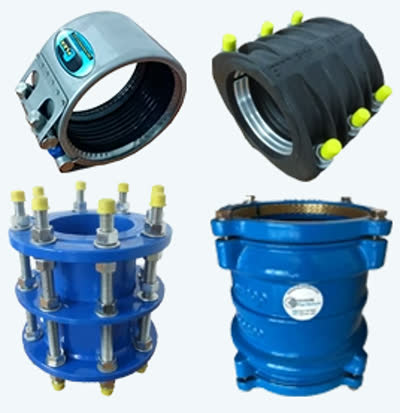

Authorised distribution of KLINGER pipe connection, repair and flow-control solutions.
Xflow holds authorised KLINGER distribution in-house, supplied alongside its own pressure-management and metering work rather than sourced through a third party.

"KLINGER Pipe Products is a leading designer, manufacturer and distributor of pipe connection, repair and flow control solutions." Xflow supplies this range as an authorised partner: couplings, repair clamps, flange fittings and repair collars.
Supplied alongside Xflow's core specialisms.
Sulaiman worked for the City of Cape Town for over 20 years, and combined with the wider team's 40+ years of experience, Xflow has become a specialist in pressure management, bulk meter upgrades and sub-meter projects. Pipe products support all three directly.
Pressure Management
Core Xflow specialism. Pipe products support fittings and repairs across pressure-managed sections of a network.
Bulk Meter Upgrades
Fittings and connection products used during meter installation and replacement.
Sub-Meter Projects
Pipe repair and flow-control components for sub-metering rollouts.
The KLINGER range Xflow supplies.
Real product photography covering the couplings, repair clamps, flange fittings and repair collars in Xflow's range.



Need pipe products for a project?
Get in touch to confirm current KLINGER stock and specification support.